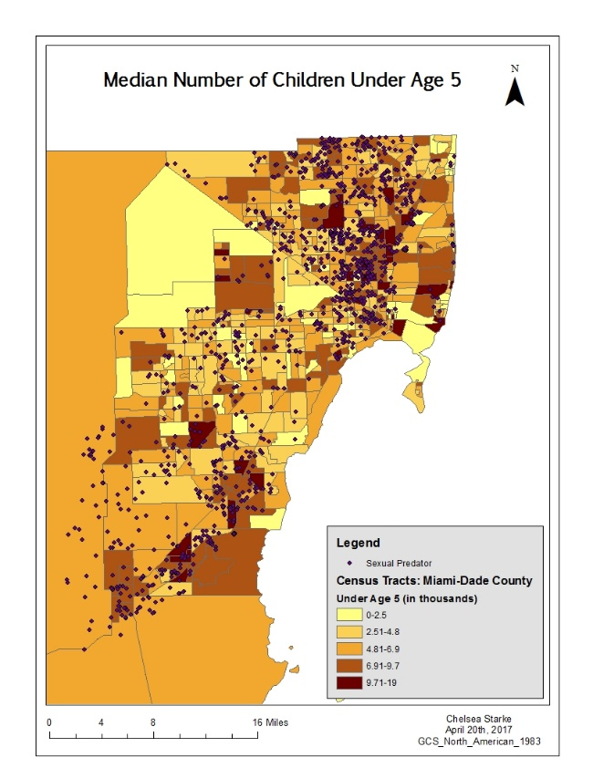
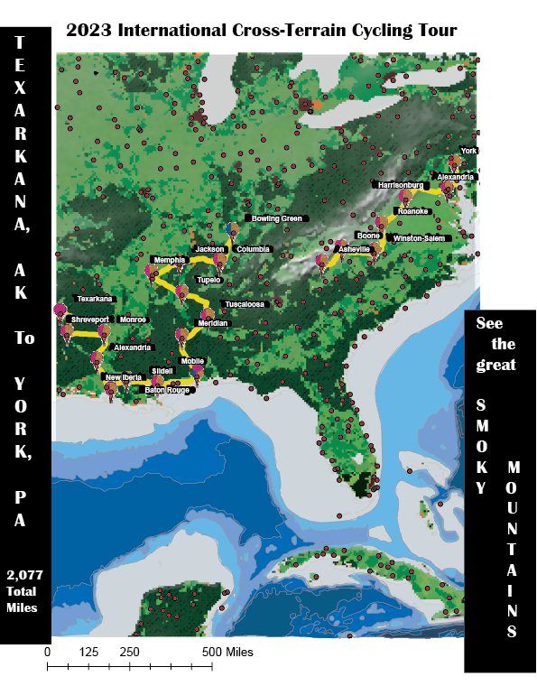

Toggle navigation
Menu
Chelsea Starke |
Cartographer
Previous Works

Using ArcGIS to understand if there is a correlation between where children, ages 0-5, live and the residences of sexual predators.

Incorporating ArcGIS into Photoshop to represent terrain during a 21-stage cycling tour through the Smoky Mountains.
How does inactivity affect our chances of developing diabetes? Let's see!
Click here to see my Resume!
Resume
Dont forget to reach me at:
Email:
cstarke2@wisc.edu
Instagram:
@chel_ci
GitHub:
cstarke2